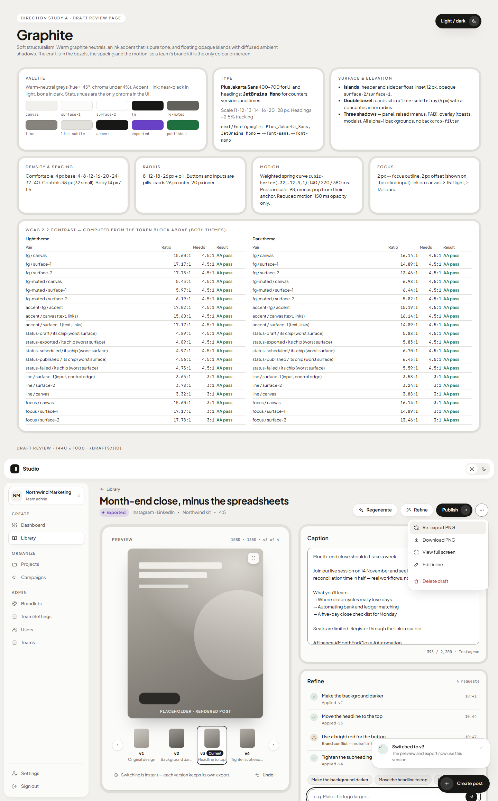
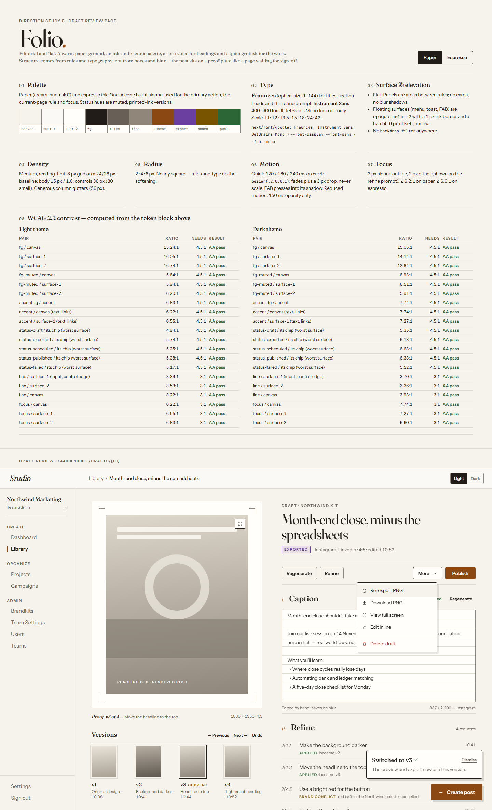
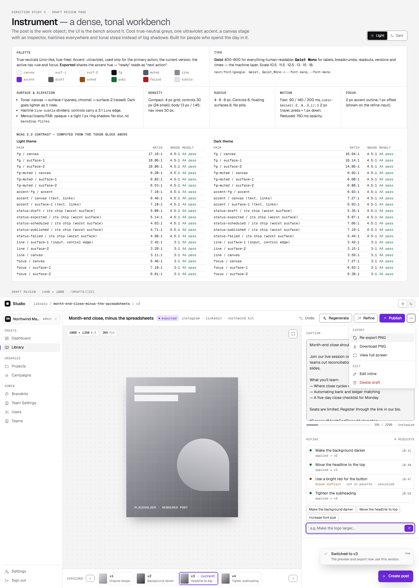

AGraphite
Today's layout, made solid and calm.

Warm grey surfaces float as opaque panels with soft shadows. The main button is black ink, so the only colour comes from status chips and the post itself.
- Type
- Plus Jakarta Sans, JetBrains Mono
- Density
- Comfortable, 14 px body
- Shape
- Pill buttons, rounded cards
- Layout
- Two columns, as today
- +Closest to today, so the restyle carries the least risk.
- +A colourless accent can never clash with a team's brand kit.
- −A black main button stands out less than a coloured one.
- −Rounded trays cost space on dense admin tables.
Open the full Graphite study ↗
BFolio
An editorial desk for a marketing team.

Paper and ink with a burnt-sienna accent. Serif headings, thin rules instead of boxes, and the post shown as a print proof with crop marks.
- Type
- Fraunces, Instrument Sans
- Density
- Reading-first, 15 px body
- Shape
- Nearly square, flat
- Layout
- Two columns, proof and copy desk
- +The most distinctive, and the easiest to read for long captions.
- +Flat surfaces are the simplest to keep opaque and fast.
- −The cream ground slightly shifts how post colours look beside it.
- −The sienna accent sits close to warm or orange brand kits.
Open the full Folio study ↗
CInstrument
A dense workbench for people who live in it.

True-neutral greys with one violet accent. The post sits on a dotted stage, versions run along a filmstrip, and caption and refine live in a right-hand inspector.
- Type
- Geist, Geist Mono
- Density
- Compact, 13 px body
- Shape
- Small radii, hairlines
- Layout
- Three panes
- +Neutral greys show brand colours most accurately.
- +The inspector fits later per-channel captions and model pickers.
- −The biggest layout change, so the draft page restyle is the riskiest.
- −13 px text is small for occasional users, and violet is a common look.
Open the full Instrument study ↗
How to choose
Reply in the Claude Code session with A, B or C. You can add changes, for example "B, but with icons in the sidebar". The pick becomes the new design system, and the screen-by-screen restyle starts from it.
All three keep every floating surface fully opaque, show a visible focus ring, reduce motion to short fades when the system asks for it, and pass WCAG AA contrast in both themes. Each full study lists its exact contrast ratios. The post previews are neutral placeholders, not real posts.